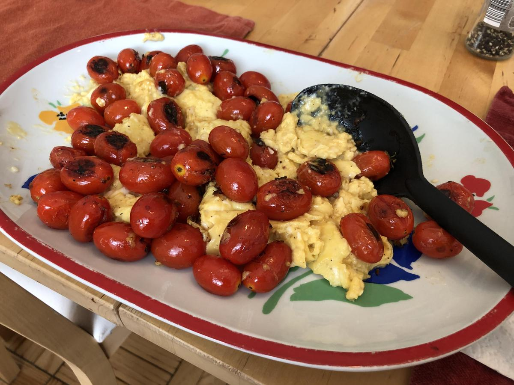

Based on Chrissy Teigen Cravings, pg. 16
Personal rating: 3 / 5

12 eggs
1/2 cup heavy cream
1 tsp salt
1/4 tsp pepper
3 Tbsp olive oil
3 Tbsp butter
garlic-roasted bacon
Whisk eggs, heavy cream, salt, and pepper until combined
In large nonstick skillet, heat oil and butter over LOW heat until butter is melted
Start heating a cast iron skillet on medium heat until hot
Add eggs and cook, stirring until a custardly and forming small curds. (12-14 min). Remove from heat
Make the tomatoes in parallel during the last 10 min of the egg cook time. In the hot skillet, add oil, swirl, then add the tomatoes. Sprinkle with salt and pepper. Cook for 5-6 min until tomatoes shrivel
Serve with the optional chives/bacon on top